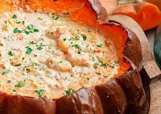

Camarão na Moranga

Description
A delicious brazilian recipe with two main ingredients: shrimp and pumpkin.
With that combination, what can go wrong?
Ingredients
- 1 cinderella pumpkin (moranga)
- 2 pounds of raw shrimp
- 2 onions and 4 cloves of garlic
- Salt, black pepper and lime juice
- Chopped fresh Roma tomatoes
- All-purpose flour
- Cream cheese
- Cilantro
Steps
- Prepare and roast the pumpkin
- Wash and dry the pumpkin
- Cut the top off and scoop out the stringy part and seeds
- Make a paste by processing a chopped onion, galice cloves, olive
oil, salt and pepper
- Rub this paste all over the inside of the pumpkin. Rub
the outside with olive oil
- Wrap in foil and bake at 350F for 45-50 minutes. Remove
from oven and reserve.
- Make the shrimp stew
- Season shrimp with lime juice, salt and pepper
- Heat olive oil, medium heat, and sauté the shrimp
- Add some more oil if needed, and sauté the onion and garlic
- Stir in the fresh tomatoes and cook, stirring occasionally
- Add flour and mix to incorporate. Then, add the milk and cook
until thickened
- Stir in the heavy cream and chopped cilantro. Return the shrimp
and mix to combine
- Fill the pumpkin and bake
- Spread the cream cheese inside the pumpkin
- Fill the creamy stew
- Top with freshly grated parmesan and bake for 15-20 minutes
- Garnish with more chopped cilantro and serve!